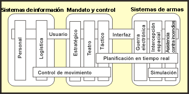

| Artefacto: Arquitectura de referencia |
 |
|
|
Los productos de trabajo de la arquitectura de referencia son parte de una base de activos reutilizable de una organización. Su objetivo es conformar un punto de partida para el desarrollo de una arquitectura. Pueden ir desde patrones de arquitectura ya preparados, mecanismos de arquitectura e infraestructuras a sistemas completos, con características conocidas, probadas en la práctica. Pueden aplicarse de forma general, o para una clase de sistemas que abarcan dominios, o tener un foco más estrecho específico de dominio. El uso de arquitecturas de referencia probadas es una forma eficaz de tratar numerosos requisitos no funcionales, sobre todo, requisitos de calidad, mediante la selección de arquitecturas de referencia existentes, que la práctica ha demostrado que cumplen dichos requisitos. Puede que las arquitecturas de referencia existan o se utilicen en niveles diferentes de abstracción y desde distintos puntos de vista. Éstos se corresponden con las vistas 4+1 (consulte "Un conjunto típico de vistas de la arquitectura"). De este modo, el arquitecto de software puede seleccionar lo que mejor se ajusta (sólo diseño de arquitectura, o diseño e implementación) a los diferentes grados de terminación. Con frecuencia, una arquitectura de referencia se define de modo que no incluya las instancias de los componentes que se utilizarán para construir el sistema (de hacerse, se convierte en una arquitectura de línea de productos), pero esta distinción no es muy importante. En Rational Unified Process (RUP), se permite que la noción de arquitectura de referencia incluya referencias a componentes reutilizables existentes (es decir, implementaciones). |
| Descripción principal | Organización de activosLa organización propietaria de los activos de arquitectura de referencia necesitará decidir cómo se clasificarán y organizarán los activos para facilitar la recuperación mediante el arquitecto del software, mediante criterios de selección coincidentes para el nuevo sistema. Aunque la creación y el almacenamiento de las arquitecturas de referencia se encuentra actualmente fuera del ámbito de RUP, se recomienda organizar las arquitecturas alrededor de la idea de Definición de términos: Dominio, donde un dominio es un área temática que define conocimientos y conceptos de algún aspecto de un sistema, o de una familia de sistemas. Aquí se permite el uso del término 'dominio' en niveles por debajo del de aplicación. Este uso difiere ligeramente de algunas definiciones, por ejemplo la presentada en [HOF99], pero se alinea bien con la presentada en [LMFS96]: "Dominio de línea de productos: grupo vinculado de funciones (presentes o futuras) definidas para facilitar la comunicación, el análisis y la ingeniería con el fin de identificar, diseñar y gestionar las similitudes en una línea de productos. Tales dominios podrían incluir grupos de sistemas de usuarios finales relacionados estrechamente, funciones de uso común en varios sistemas, o agrupaciones de servicios subyacentes de amplia aplicación." Esta definición incluye la noción de que las cosas que se utilizan para componer los sistemas podrían pertenecer a un dominio digno de estudio por propio derecho. La siguiente figura, extraída de [LMFS96], ilustra este principio.  Dominios horizontales y verticales del ejército de los EE.UU. Esta figura muestra las principales familias del sistema, Information Systems (Sistemas de información), Command & Control (Mando y control) y Weapon Systems (Sistemas de armamento), cada uno con dominios verticales completos, y dominios horizontales que se extienden por los dominios verticales y por las familias del sistema. Por lo tanto, los conceptos de planificación en tiempo real son aplicables al dominio táctico de Command & Control y a todos los dominios verticales de Weapon Systems. Posiblemente, lo mejor sea resolver problemas de planificación en tiempo real una vez para todos estos dominios, y tratar los conocimiento y activos desarrollados de esta manera como un dominio independiente, que tendrá entonces una asociación, por ejemplo, con Electronic Warfare (Guerra electrónica), pero no con los sistemas de información del personal. ContenidoLa arquitectura de referencia tiene el mismo formato que el Producto de trabajo: Documento de arquitectura de software y los modelos asociados, sin referencias específicas del proyecto, o con referencias y características genéricas del proyecto, de modo que la arquitectura de referencia pueda clasificarse adecuadamente en la base de activos. Los modelos típicos asociados con el Documento de arquitectura de software (SAD) son un modelo de guión de uso, un modelo de diseño, un modelo de implementación y un modelo de despliegue. El acceso al documento SAD y modelos asociados ofrece diversos puntos de entrada para el arquitecto de software, que puede elegir usar sólo las partes lógicas o conceptuales de la arquitectura (si la política de reutilización de la organización lo permite). En el otro extremo, el arquitecto de software puede tomar subsistemas de trabajo completos y un modelo de despliegue en el nivel físico (es decir, anteproyectos de redes y hardware completos) de la base de activos. Para que los activos de arquitectura se puedan utilizar se necesitan otros artefactos de soporte.
|
|---|---|
| Esquematización breve |
Organización de activosLa organización propietaria de los activos de arquitectura de referencia necesitará decidir cómo se clasificarán y organizarán los activos para facilitar la recuperación mediante el arquitecto del software, mediante criterios de selección coincidentes para el nuevo sistema. Aunque la creación y el almacenamiento de las arquitecturas de referencia se encuentran actualmente fuera del ámbito de RUP, una recomendación es la organización de las arquitecturas alrededor de la idea de dominios, donde un dominio es un área temática que define conocimientos y conceptos de algún aspecto de un sistema, o de una familia de sistemas. Aquí se permite el uso del término 'dominio' en niveles por debajo del de aplicación. Este uso difiere ligeramente de algunas definiciones, por ejemplo, la presentada en [HOF99], pero se alinea bien con la presentada en [LMFS96]: "Dominio de línea de productos: grupo vinculado de funciones (presentes o futuras) definidas para facilitar la comunicación, el análisis y la ingeniería con el fin de identificar, diseñar y gestionar las similitudes en una línea de productos. Tales dominios podrían incluir grupos de sistemas de usuarios finales relacionados estrechamente, funciones de uso común en varios sistemas, o agrupaciones de servicios subyacentes de amplia aplicación." Esta definición incluye la noción de que las cosas que se utilizan para componer los sistemas podrían pertenecer a un dominio digno de estudio por propio derecho. La siguiente figura, extraída de [LMFS96], ilustra este principio.
Dominios horizontales y verticales del ejército de los EE.UU. Esta figura muestra las principales familias del sistema, Information Systems (Sistemas de información), Command & Control (Mando y control) y Weapon Systems (Sistemas de armamento), cada uno con dominios verticales completos, y dominios horizontales que se extienden por los dominios verticales y por las familias del sistema. Por lo tanto, los conceptos de planificación en tiempo real son aplicables al dominio táctico de Command & Control y a todos los dominios verticales de Weapon Systems. Posiblemente, lo mejor sea resolver problemas de planificación en tiempo real una vez para todos estos dominios, y tratar los conocimiento y activos desarrollados de esta manera como un dominio independiente, que tendrá entonces una asociación, por ejemplo, con Electronic Warfare (Guerra electrónica), pero no con los sistemas de información del personal. ContenidoLa arquitectura de referencia tiene el mismo formato que el Producto de trabajo: Documento de arquitectura de software y los modelos asociados, sin referencias específicas del proyecto, o con referencias y características genéricas del proyecto, de modo que la arquitectura de referencia pueda clasificarse adecuadamente en la base de activos. Los modelos típicos asociados con el Documento de arquitectura de software (SAD) son un modelo de guión de uso, un modelo de diseño, un modelo de implementación y un modelo de despliegue. El acceso al documento SAD y modelos asociados ofrece diversos puntos de entrada para el arquitecto de software, que puede elegir usar sólo las partes lógicas o conceptuales de la arquitectura (si la política de reutilización de la organización lo permite). En el otro extremo, el arquitecto de software puede tomar subsistemas de trabajo completos y un modelo de despliegue en el nivel físico (es decir, anteproyectos de redes y hardware completos) de la base de activos. Para que los activos de arquitectura se puedan utilizar se necesitan otros productos de trabajo de soporte.
|
| Opciones de representación | Representación UML: Número de vistas de arquitectura relevantes: guión de uso, lógica, proceso, despliegue, implementación,
datos.
A no ser que el sistema no tenga precedentes, las arquitecturas de referencia deben examinarse para ver si pueden aplicarse (al dominio y tipo de desarrollo) si existen y son accesibles para la empresa de desarrollo. La creación de arquitecturas de referencia es un tema que debe tratarse a nivel empresarial. Es posible recortar los contenidos de la lista anterior y seguir obteniendo ventajas de la utilización de la arquitectura. Por ejemplo, es posible omitir el modelo de prueba, aunque tengan que volver a escribirse las pruebas si se modifica la arquitectura. Como mínimo, uno puede esperar un modelo de diseño y alguna descripción del comportamiento asociado (quizá el modelo de guión de uso). Si no cuenta con eso, es difícil decir del activo que es una arquitectura de referencia. En todo caso, podría ser un patrón válido. |
|---|
© Copyright IBM Corp. 1987, 2006. Reservados todos los derechos. |